로우에너지 스마일은 레이저 에너지를 낮춰 각막 절단면의 불규칙성을 줄이고, 수술 후 회복과 시력의 질을 높이는 방향으로 연구되었습니다.
아이리움 로우에너지 스마일 주요 성과
-
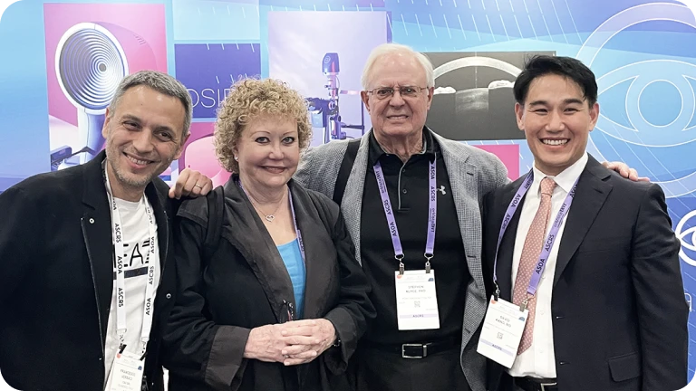
미국백내장굴절수술학회(ASCRS)
2년 연속 BEST PAPER, 누적 4회수상 -
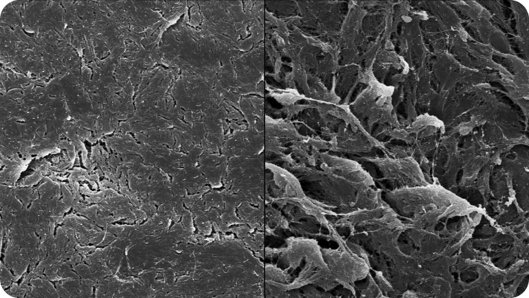
로우에너지 스마일의 현미경학적 연구
비디오 논문상 수상
• 제117회 대한안과학회 학술대회 -
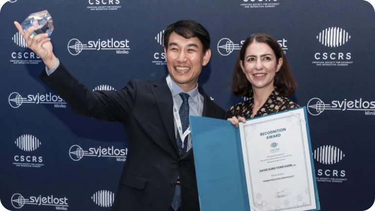
강성용 원장 , 전세계 5명에 수여하는 공로상 ‘스마일’ 부문 수상(ESCRS산하 CSCRS), 플라즈마 스마일 초청 강연
-
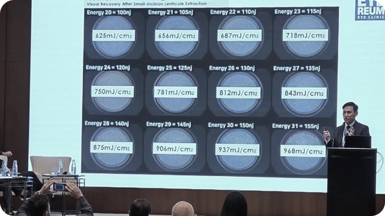
‘플라즈마 스마일’ 국제학회 초청 강연 (ESCRS, AECOS,KSCRS 등), SCI 안과학술지 'Journal of Refractive Surgery’ 논문 등재
로우에너지 스마일
패러다임의 완성
-
시력의 질 차이 이유
낮은 에너지가 만드는 더 매끄러운 절단면
Low Energy SMILE 시력 회복 연구
American Journal of Ophthalmology. 2017. -
회복 속도 이상의 가치
야간 빛번짐·눈부심까지 고려한 수술
빠른 회복을 넘어, 수술 후 야간 빛번짐과 눈부심에 영향을 줄 수 있는 고위수차를 줄이는 방향으로 스마일 수술을 발전시켜왔습니다.
비대칭 레이저 배열 연구
Journal of Cataract & Refractive Surgery. 2025. -
플라즈마 스마일로의 진화
로우에너지에서 플라즈마 스마일까지
로우에너지, 비대칭 레이저 배열, 미세기포 최소화 연구를 바탕으로 아이리움의 스마일은 플라즈마 스마일로 진화하고 있습니다.
Plasma SMILE 연구
Journal of Refractive Surgery. 2025.
전세계 8,000,000안이 선택한
스마일의 안전성
스마일의 안전성은 수술 건수만으로 완성되지 않습니다. 아이리움은 수술 중 변수, 수술 후 건조증,
중심이탈, 난시 교정까지 연구해 스마일 수술의 안전 기준을 구체화해왔습니다.
*2026년 기준
-
1980년대 후반
1세대 :
PRK/라섹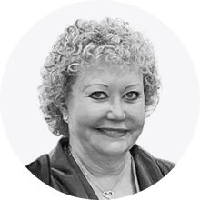
Marguerite McDonald세계 최초 PRK 수술 시행
-
1990년대 초반
2세대 :
라식/펨토라식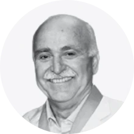
Ioannis Pallikaris세계 최초 LASIK 수술 시행
-
2000년대 후반
3세대 :
스마일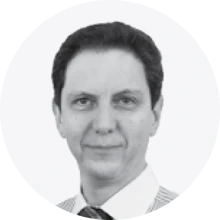
Walter Sekundo세계 최초 SMILE 수술 시행
-
2016-2023년
4세대 :
로우에너지 스마일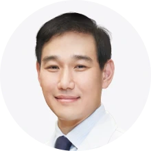
아이리움 강성용 대표원장로우에너지 스마일·스마일 프로
국내수술 1호 -
2024년
5세대 :
플라즈마 스마일 아이리움 강성용 대표원장플라즈마 스마일 국내 첫 시행
-
일반 스마일
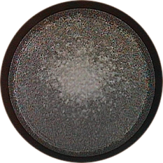
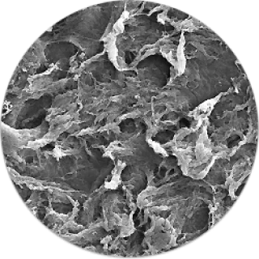
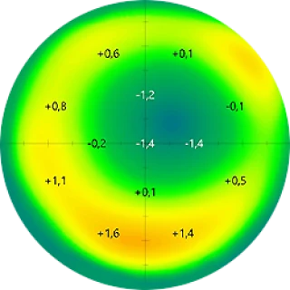
-
로우에너지 스마일
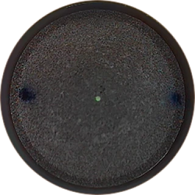
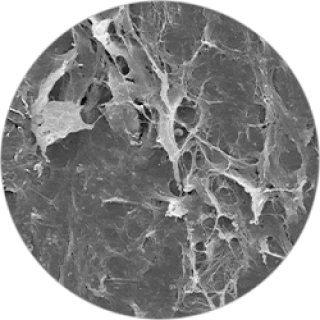
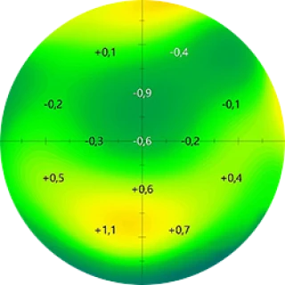
-
로우에너지 스마일프로
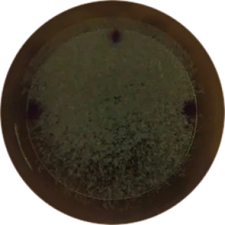
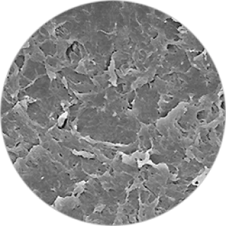
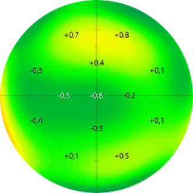
플라즈마 스마일
-
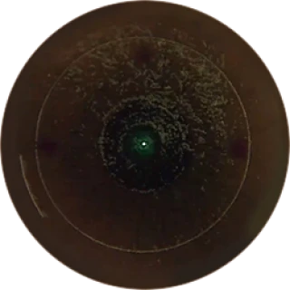
불투명 가스층(OBL)각막 내 가스기포(OBL) 감소
→ 수술 후 뿌연 증상 감소 및 시력의 질 향상 -
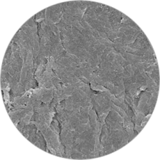
수술 후 각막 렌티콜 표면부드럽고 매끈한 각막 절단면
→ 야간 빛 번짐 및 눈 부심 감소 -
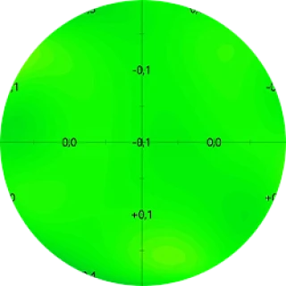
수술 후 고위수차각막 고위수차의 감소
→ 선명함, 시력의 질 향상
* 아이리움의 실제 수술결과로 콘텐츠의 무단사용 및 복제를 금합니다.
로우에너지 스마일 라인업
로우에너지 스마일에서 울트라 로우에너지, 그리고 플라즈마 스마일까지
아이리움 스마일은 지금도 진화하고 있습니다.
-
로우에너지 스마일
- SCI 논문
- Low
Energy
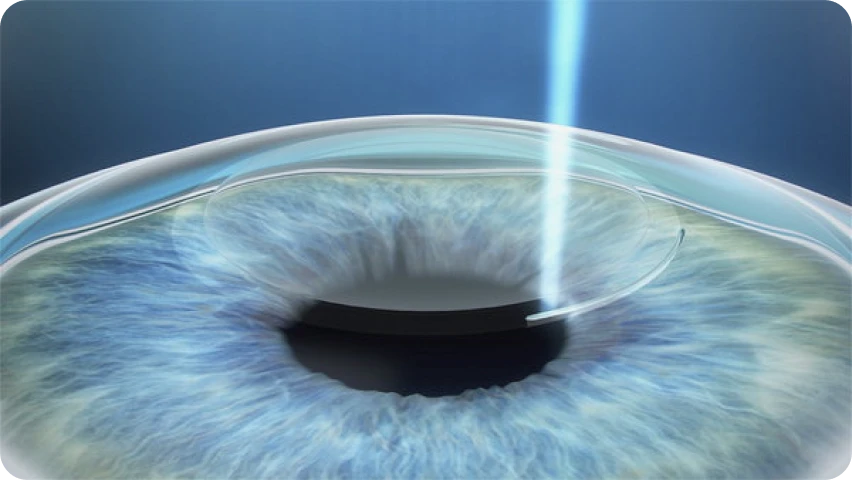
개인별 눈 상태에 가장 적합한 낮은 에너지로
시력의 질을 높인 스마일- 아이리움, 2016년 로우에너지 스마일 국내 첫 시행
- 아이리움, 스마일 관련 SCI 논문 16편 (2026년 기준)
-
로우에너지 스마일프로
- 1호 수술
- Ultra-Low Energy
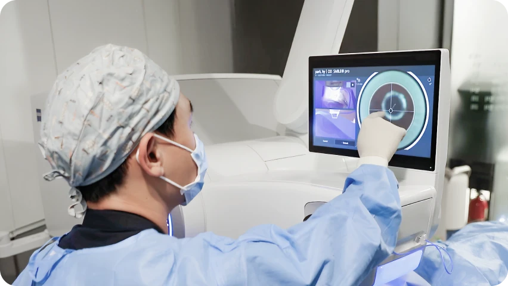
비쥬맥스 800을 이용한 8초 스마일 시대, 스마일프로 한국 1호, Ultra-Low Energy 실현- 미국백내장굴절수술학회 2024·2025 2년 연속각막 고위수차 감소 연구 최우수 선정
-
플라즈마 스마일
- SCI 논문
- Plasma Energy
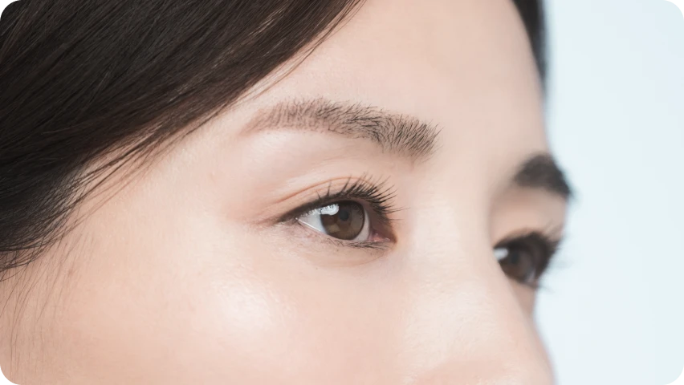
플라즈마 에너지로 수술하는 초정밀 최상위 스마일, 시력의 질 극대화를 실현- 플라즈마 스마일(P-KLEx) 수술법(Journal of Refractive Surgery, 2024)
아이움안과는 스마일프로의 국내 첫 도입,
Ultra-Low Energy SMILE 수술시대를 열었습니다.
Ultra-Low Energy SMILE 수술시대를 열었습니다.
아이리움 스마일 연구가 만든
7가지 기준
The 7 Criteria Established Through EYEREUM’s SMILE Research

아이리움 의료진은 스마일 수술의 에너지, 중심, 난시, 안전 대처, 플라즈마 방식까지 수술 결과에 영향을 주는 핵심 요소를 SCI 국제학술지 논문으로 검증해왔습니다.
-
1. 로우에너지 스마일
낮은 에너지로 더 빠른 회복과 시력의 질을 연구하다.아이리움 의료진이 참여한 임상연구를 통해, 낮은 레이저 에너지 레벨이 스마일 수술 후 초기 시력 회복과 시력의 질에 영향을 줄 수 있음을 확인했습니다. 또한 각막 절단면의 불규칙함을 줄이는 방향을 제시하며, 현재 로우에너지 스마일 수술의 중요한 기준이 되었습니다.
Lower Laser Energy Levels Lead to Better Visual Recovery After Small-Incision Lenticule Extraction. American Journal of Ophthalmology. 2017. Ji YW, Kim M, Kang DSY, Reinstein DZ, Archer TJ, Choi JY, et al. 국내에 처음으로 낮은 에너지를 이용한 스마일 수술방식이 시력 향상 및 빛번짐 감소 측면에서 월등하다는 것을 증명. 또한 로우에너지 방식을 이용시 스마일 수술 후 각막 절단면의 불규칙함이 현저히 개선됨을 규명하여 시력의 질 향상으로 이어짐을 증명. 현재 시행되는 스마일 수술의 표준을 제시함.
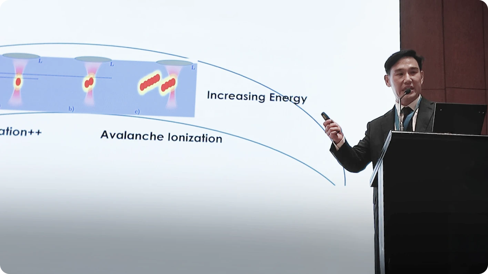
-
2. 수술 중 변수까지 대비한 안전
프로토콜예기치 못한 변수까지 통제하여 수술의 완성도를 높이다.스마일 수술 중 드물게 발생할 수 있는 석션 로스 상황에서, 즉시 커스텀아이즈 라섹으로 전환하는 대처 방법의 임상 결과를 분석했습니다. 예기치 못한 상황에서도 안정적인 결과를 얻기 위한 아이리움의 수술 중 대응 기준을 제시한 연구입니다.
Clinical Outcomes of Immediate Transepithelial Photorefractive Keratectomy After Suction Loss During Small-Incision Lenticule Extraction. Journal of Cataract & Refractive Surgery. 2020. Chung B, Kang DSY, Kim JH, Arba-Mosquera S, et al. 스마일 수술 중 레이저 조사 과정에서 석션로스 발생시 안전하게 커스텀 아이즈 라섹으로 전환하여 기존 스마일 수술과 동일한 결과를 보임을 증명. 수술 중 환자의 협조 부족으로 발생 가능한 상황에 대해 안전하고 확실한 대처 방법의 기준을 제시함.
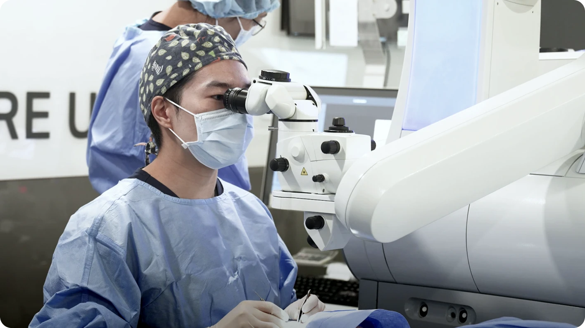
-
3. 스마일 후 건조증 안정성
수술 후 건조증 부담을 비교 연구하다.스마일 수술 후 건조증 발생 양상을 라섹 수술과 비교해, 스마일 수술의 건조증 안정성을 확인했습니다. 수술 후 회복 과정에서 환자가 체감할 수 있는 건조감까지 연구한 결과입니다.
Comparing Dry Eye Disease After Small Incision Lenticule Extraction and Laser Subepithelial Keratomileusis. Cornea. 2020. Chung B, Choi M, Lee KY, Kim EK, Seo KY, Jun I, Kim KY, Kim TI. 레이저 수술 중 건조증 발생 측면에서 가장 유리하다고 알려진 라섹 수술 대비, 스마일 수술이 동일하게 건조증 발생에서 유리함을 증명함. 스마일 수술의 건조증 안정성에 대해 규명.
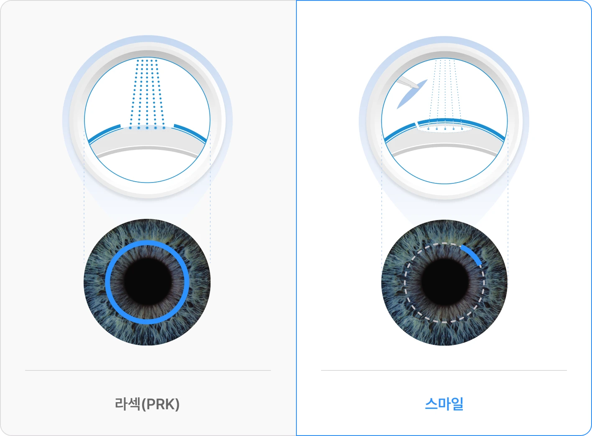
-
4. 트리플 센트레이션
중심이탈을 줄여 시력의 질을 높이다.아이리움 의료진은 스마일 수술에서 중심이탈이 고위수차와 시력의 질에 미치는 영향을 연구했습니다. 시축, 각막 중심, 동공 중심을 함께 고려하는 트리플 센트레이션 기법을 통해 미세한 중심부 이탈을 줄이고, 특히 고도난시 환자에서 난시 교정의 정확도를 높이는 기준을 제시했습니다.
Comparison of the Distribution of Lenticule Decentration Following SMILE by Subjective Patient Fixation or Triple Marking Centration. Journal of Refractive Surgery. 2018. Kang DSY(강성용), Lee H, Reinstein DZ, Roberts CJ, Arba-Mosquera S, et al. 레이저 수술 중 건조증 발생 측면에서 가장 유리하다고 알려진 라섹 수술 대비, 스마일 수술이 동일하게 건조증 발생에서 유리함을 증명함. 스마일 수술의 건조증 안정성에 대해 규명.
Relationship Between Decentration and Induced Corneal Higher-Order Aberrations Following Small-Incision Lenticule Extraction Procedure. Investigative Ophthalmology & Visual Science, 2018. Lee H, Roberts CJ, Arba-Mosquera S, Kang DSY, et al. 트리플 마킹 센트레이션 기법을 적용한 스마일 수술시 수술의 정확도를 높이고 미세한 중심부 이탈을 방지해 고위수차 발생을 최소화하여 시력의 질 향상을 증명. 특히 고도 난시 환자군에서 트리플 마킹 센트레이션 기법을 적용할 때 난시 교정의 정확도가 증가함을 규명. 중심이탈 방지 및 난시 교정을 위한 스마일 수술 방식의 기준이 됨.
Clinical Outcomes of SMILE With a Triple Centration Technique and Corneal Wavefront-Guided Transepithelial PRK in High Astigmatism. Journal of Refractive Surgery, 2018. Jun I, Kang DSY, Reinstein DZ, Arba-Mosquera S, et al. 트리플 마킹 센트레이션 기법을 적용한 스마일 수술시 수술의 정확도를 높이고 미세한 중심부 이탈을 방지해 고위수차 발생을 최소화하여 시력의 질 향상을 증명. 특히 고도 난시 환자군에서 트리플 마킹 센트레이션 기법을 적용할 때 난시 교정의 정확도가 증가함을 규명. 중심이탈 방지 및 난시 교정을 위한 스마일 수술 방식의 기준이 됨.
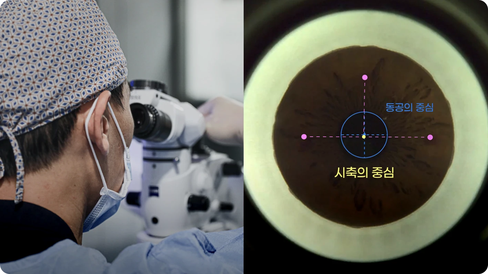
-
5. 벡터플래닝 난시 교정
난시 교정의 정확도를 높이는 수술 설계아이리움 의료진은 스마일 수술에서 단순 굴절값만 반영하는 방식과 벡터플래닝을 적용한 방식을 비교했습니다. 수술 전 굴절난시와 각막난시의 차이를 분석해 수술 설계에 반영함으로써, 수술 후 잔여난시를 줄이고 난시 교정의 정확도를 높이는 방법을 연구했습니다.
Comparison of Clinical Outcomes Between Vector Planning and Manifest Refraction Planning in SMILE for Myopic Astigmatism. Journal of Cataract & Refractive Surgery. 2020. Jun I, Kang DSY, Arba-Mosquera S, Reinstein DZ, Archer TJ, et al. 트리플 마킹 센트레이션 기법을 적용한 스마일 수술시 수술의 정확도를 높이고 미세한 중심부 이탈을 방지해 고위수차 발생을 최소화하여 시력의 질 향상을 증명. 특히 고도 난시 환자군에서 트리플 마킹 센트레이션 기법을 적용할 때 난시 교정의 정확도가 증가함을 규명. 중심이탈 방지 및 난시 교정을 위한 스마일 수술 방식의 기준이 됨.
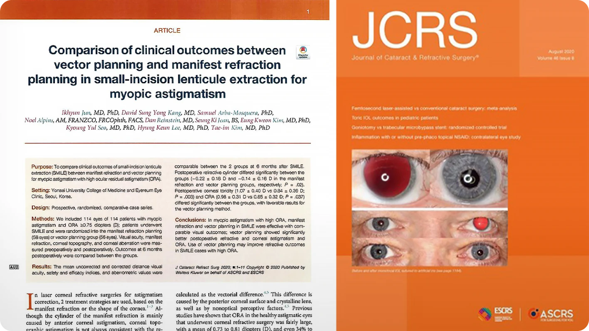
-
6. 비대칭 레이저 배열
각막 고위수차를 줄이는 레이저 배열 연구아이리움 의료진은 기존의 대칭 레이저 배열에서 나아가, 비대칭 레이저 배열을 적용한 스마일 수술 결과를 연구했습니다. 비대칭 레이저 배열이 각막 고위수차를 줄이고, 수술 후 시력의 질을 높이는 데 기여할 수 있음을 확인했습니다.
Reducing Higher-Order Aberrations After Keratorefractive Lenticule Extraction Using Asymmetric Spacing Spot/Track Distances With Low-Energy Levels. Journal of Cataract & Refractive Surgery. 2025. Park ES, Kim K, Arba-Mosquera S, Kim TI, Kang DSY. 스마일 수술시 기존의 대칭 레이저 배열에서 변형된 비대칭 레이저 배열을 이용한 연구 결과. 대칭 레이저 배열 대비 시력의 질 향상 (각막 고위수차의 감소) 를 증명함. 표준 레이저 배열의 새로운 기준을 제시.
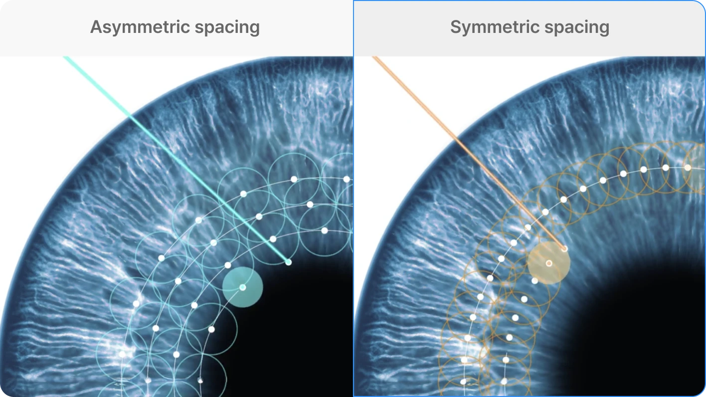
-
7. 플라즈마 스마일
미세기포를 줄여 더 정교한 스마일로 진화하다.아이리움 의료진은 기존 로우에너지 스마일에서 한 단계 더 나아가, 에너지 레벨을 낮추고 비대칭 레이저 배열을 결합한 플라즈마 방식의 스마일 수술을 연구했습니다. 레이저 조사 시 발생하는 미세기포를 최소화해, 보다 정교한 각막 절단면과 시력의 질 향상을 목표로 한 수술 방식입니다.
Optimizing Plasma Formation and Minimizing Microcavitation to Enhance Clinical Outcomes in Keratorefractive Lenticule Extraction. Journal of Refractive Surgery. 2025. Ryu S, Kang DSY, Kim KY, Arba-Mosquera S, Chung B, Jun I, et al. 스마일 수술시 기존의 대칭 레이저 배열에서 변형된 비대칭 레이저 배열을 이용한 연구 결과. 대칭 레이저 배열 대비 시력의 질 향상 (각막 고위수차의 감소) 를 증명함. 표준 레이저 배열의 새로운 기준을 제시.
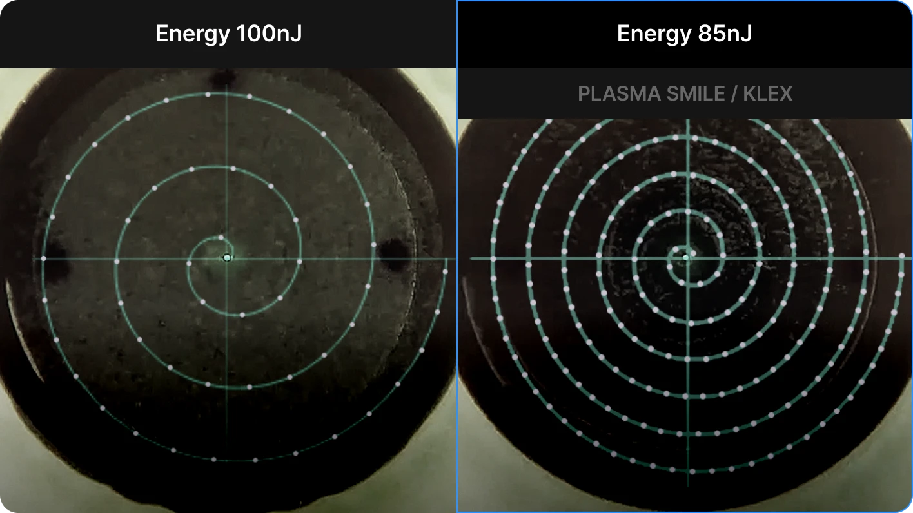
아이리움,
로우에너지 스마일의 기준
아이리움의 목표는 단순한 수술 시행이 아니라, 각막 고위수차를 최소화하여
시력의 질을 높이는 스마일의 패러다임을 완성하는 것입니다.
-
구분수술장비레이저 조사 시간
(단안 기준)에너지 레벨각막 절단면
매끄러움수술 중
미세기포 발생야간 빛번짐·눈부심세안, 샤워, 피부화장,
가벼운 운동맞춤 설계 -
일반
스마일약 30초기본거친 절단면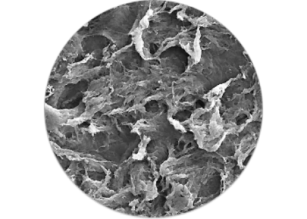
발생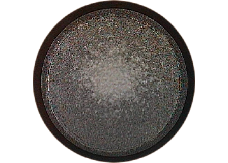
기본다음 날 가능 (뿌연 증상 2주)기본 방식 -
로우에너지
스마일약 30초Low Energy균일성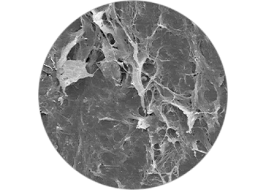
억제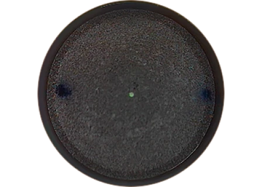
억제다음 날 가능트리플 센트레이션, 벡터플래닝,
Asymmetric spacing -
로우에너지
스마일 프로약 8초Ultra Low Energy정밀도 향상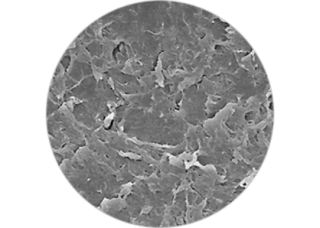
감소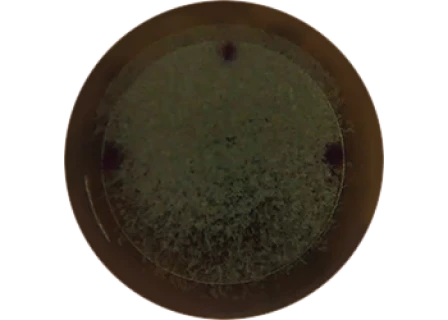
감소다음 날 가능트리플 센트레이션, 벡터플래닝,
Asymmetric spacing -
플라즈마
스마일아이리움
국내 첫 시행약 8초Plasma Energy미세기포 최소화 기반 정밀 절단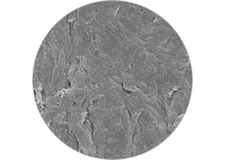
최소화 지향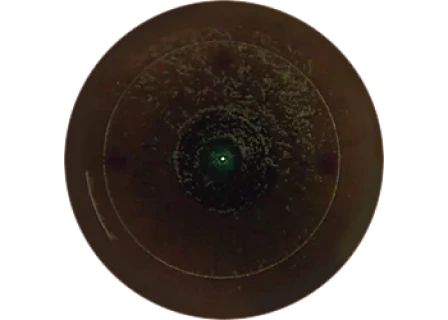
최소화 지향다음 날 가능트리플 센트레이션, 벡터플래닝,
Asymmetric spacing
* 개인에 따라 결과가 다를 수 있습니다.
스마일 수술 기술·도구 특허 취득
스마일 수술은 같은 장비를 사용하는 것만으로 정밀도가 완성되지 않습니다.
아이리움은 수술 설계, 렌티큘 분리, 중심 정렬 과정에서 필요한 수술 기술 및 도구를 연구하고 특허화해왔습니다.
-
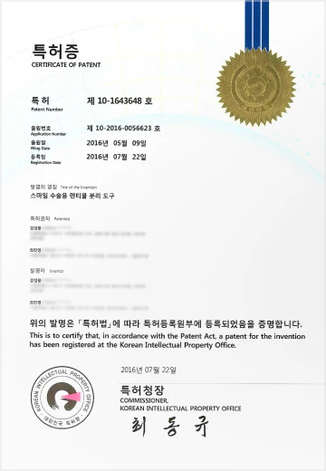
각막 렌티큘 분리(정교한 분리)
제10-1643648호
-
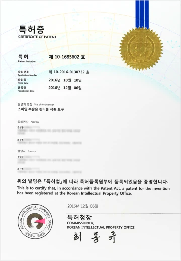
각막 렌티큘 최소두께(각막 보존 설계)
제10-1685602호
-
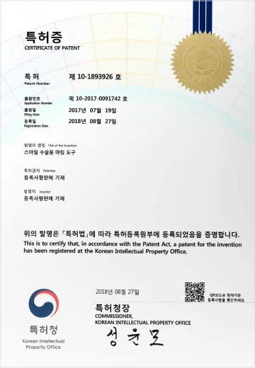
트리플 센트레이션(중심 정렬 기술)
제10-1893926호
로우에너지 스마일, 이런 분께 추천합니다.
-
안경·렌즈 없는 편한 일상을
원하시는 분 -
수술 후 빠른 일상 복귀가
중요한 분 -
운동이나 야외활동을
즐기시는 많은 분 -
수술 후 안구건조증이
걱정되는 분 -
야간 빛번짐과 눈부심이
걱정되는 분
로우에너지 스마일 FAQ
로우에너지 스마일 수술 전, 가장 많이 묻는 질문
-
Q
로우에너지 스마일은 일반 스마일과 무엇이 다른가요?
수술 방식은 정밀검사 결과를 바탕으로 결정됩니다. 근시·난시 정도, 각막 두께와 형태, 고위수차, 야간 빛번짐 우려, 회복 목표 등을 종합해 기본 투데이라섹, 커스텀아이즈 투데이라섹, 커스텀아이즈 Plus 중 적합한 방식을 안내합니다.
-
Q
로우에너지 스마일, 로우에너지 스마일프로, 플라즈마 스마일은 무엇이 다른가요?
수술 방식은 정밀검사 결과를 바탕으로 결정됩니다. 근시·난시 정도, 각막 두께와 형태, 고위수차, 야간 빛번짐 우려, 회복 목표 등을 종합해 기본 투데이라섹, 커스텀아이즈 투데이라섹, 커스텀아이즈 Plus 중 적합한 방식을 안내합니다.
-
Q
모든 사람이 로우에너지 스마일이 가능한가요?
수술 방식은 정밀검사 결과를 바탕으로 결정됩니다. 근시·난시 정도, 각막 두께와 형태, 고위수차, 야간 빛번짐 우려, 회복 목표 등을 종합해 기본 투데이라섹, 커스텀아이즈 투데이라섹, 커스텀아이즈 Plus 중 적합한 방식을 안내합니다.